Ejercicio 8
Capturas de pantalla de la conexión
Elección y explicación del contaminante
Capturas de pantalla del dashboard - índice

Capturas de pantalla del dashboard - gráficos
Capturas de pantalla del dashboard - Unión
Ejercicio 10
Capturas de pantalla del gráfico sin nulos
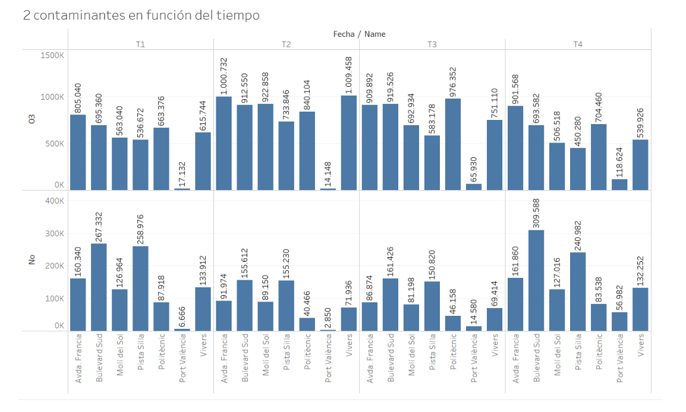Capturas de pantalla de la fórmula
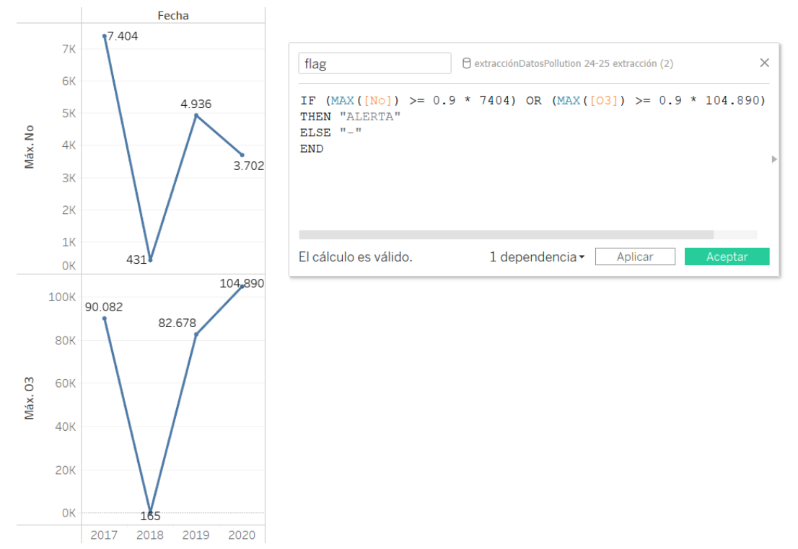Capturas de pantalla del gráfico de la flag
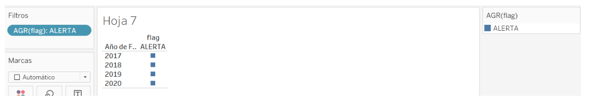Capturas de pantalla de la estacionalidad
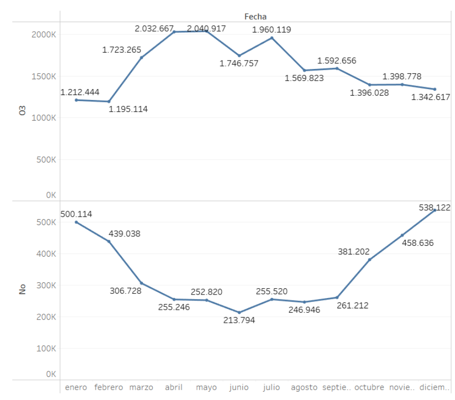 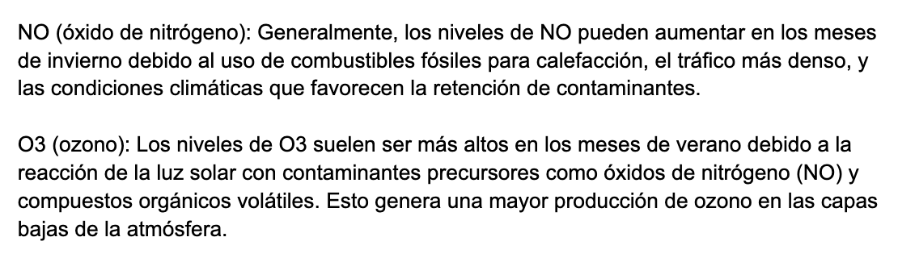Capturas de pantalla del pronóstico
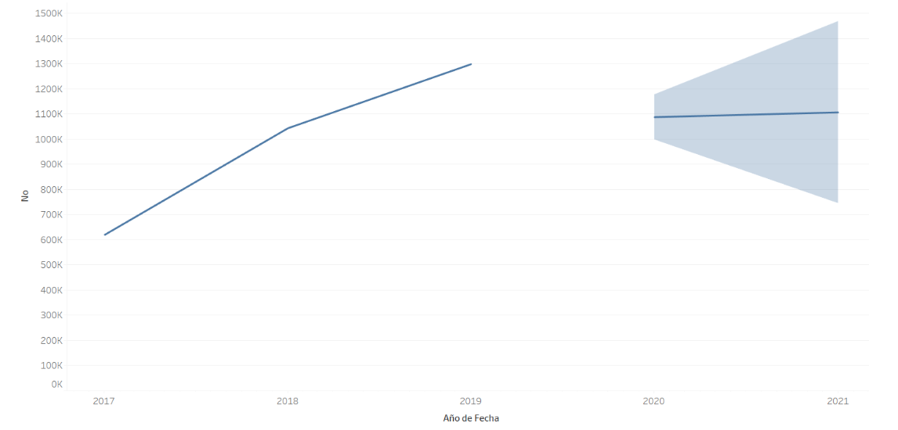Capturas de pantalla de la historia, introducción y conclusión
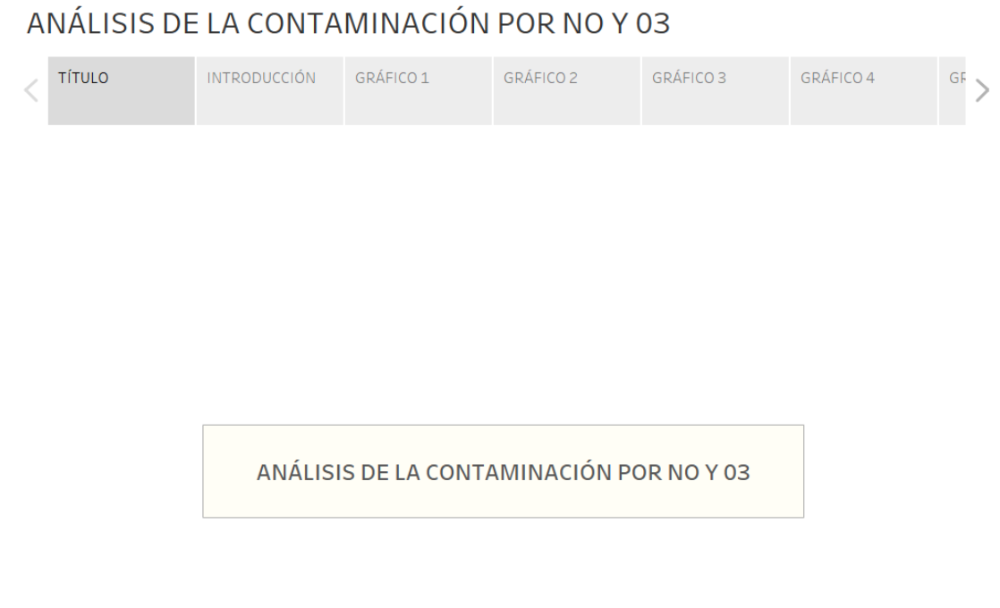 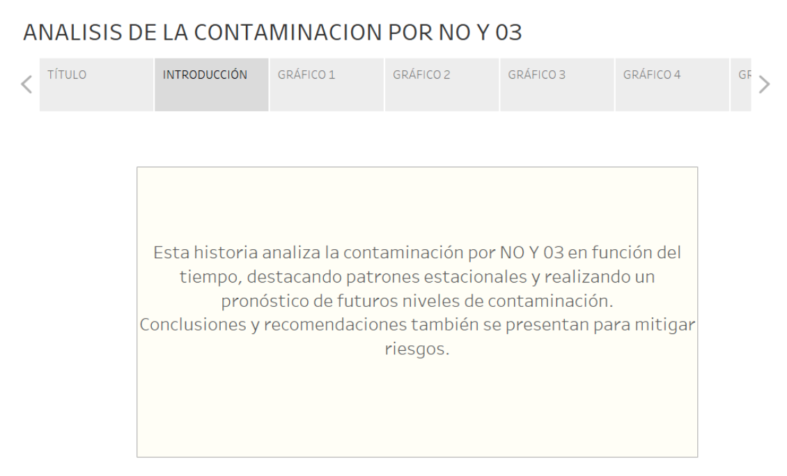 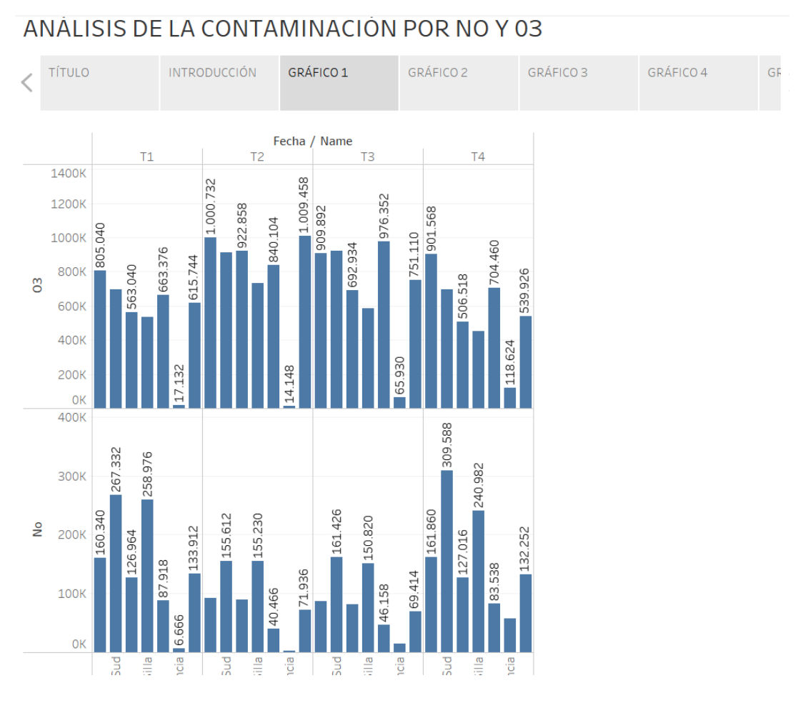 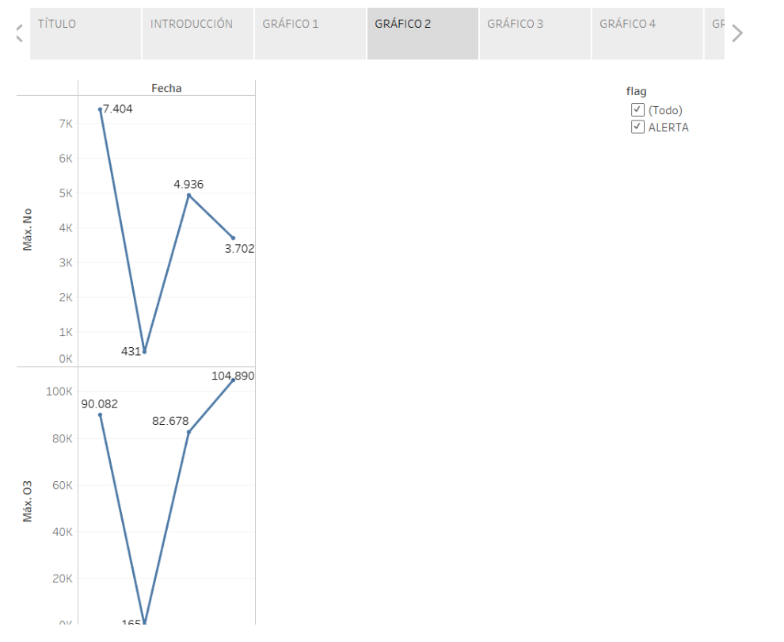 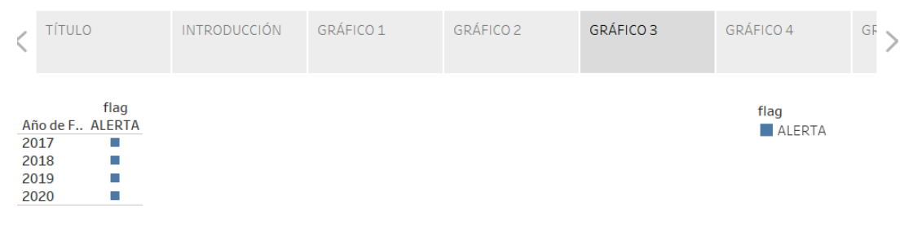 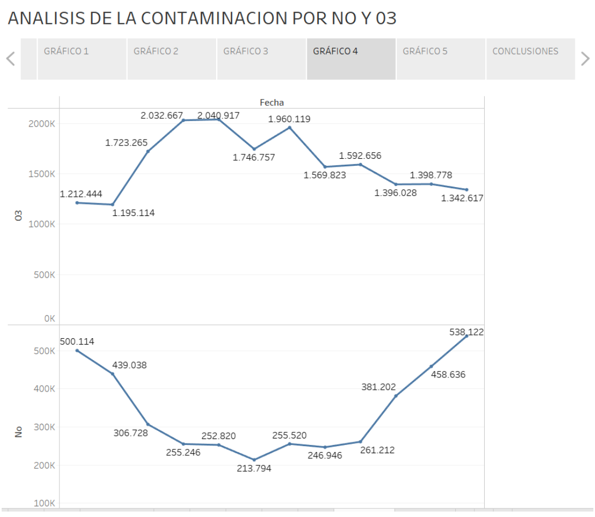 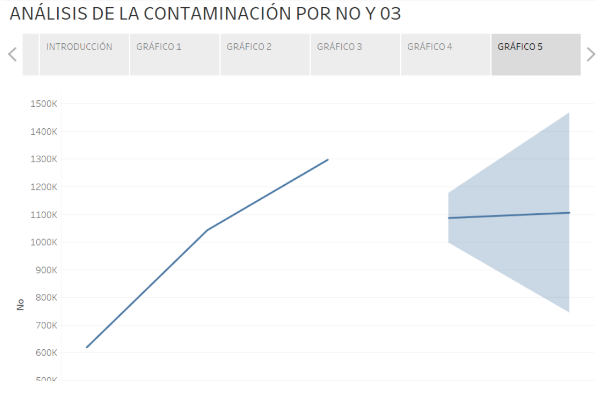 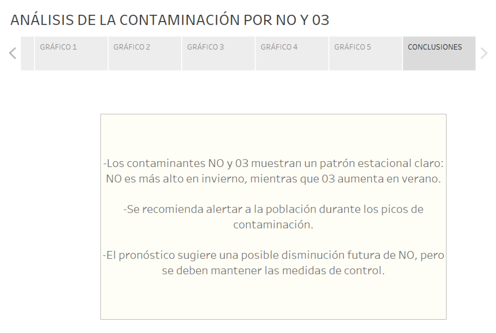